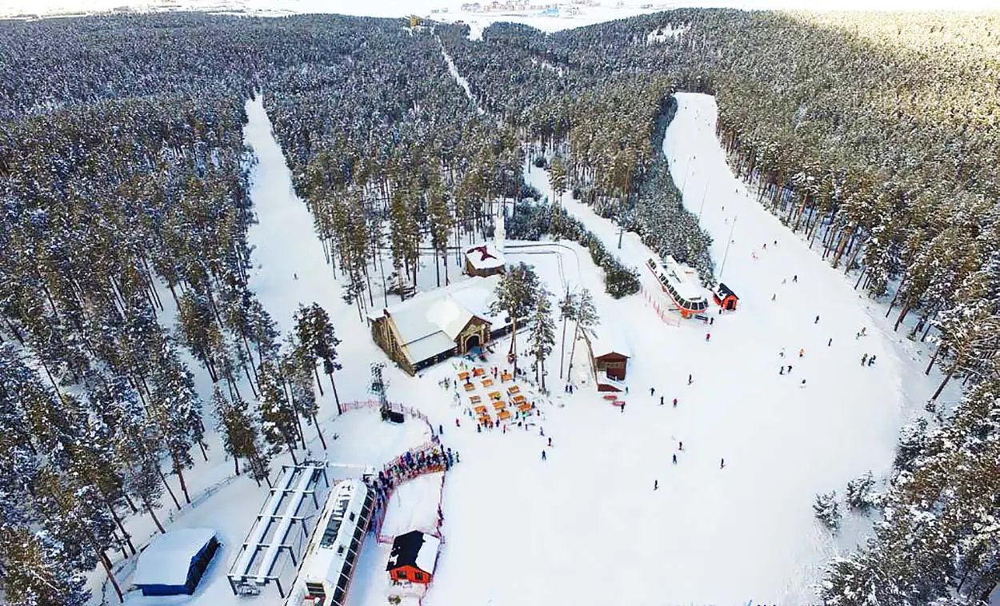
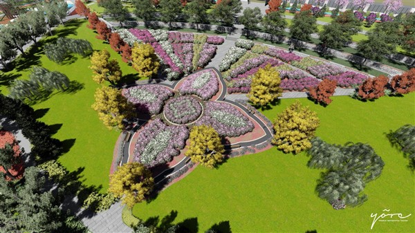
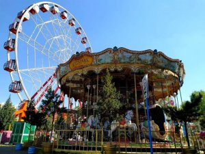

Kristal karıyla ünlü Sarıkamış Kayak Merkezi, kış sporları ve ailece eğlence için ideal bir destinasyondur.
Konum: Sarıkamış/Kars
Aktiviteler: Kayak, snowboard, kızak, teleferik
Giriş: Ücretli (skipass gereklidir)

Yürüyüş yolları, dinlenme alanları ve çocuk parklarıyla her yaştan birey için sakin ve keyifli bir ortam sunar.
Konum: Yenişehir Mah., Merkez/Kars
Aktiviteler: Yürüyüş, piknik, çocuk oyun alanı
Giriş: Ücretsiz

Mini lunapark alanı, salıncaklar ve eğlenceli figürlerle çocuklar ve aileler için güzel bir sosyal ortam sunar.
Konum: Fevzi Çakmak Mah., Merkez/Kars
Aktiviteler: Lunapark, aile yürüyüşü, dinlenme
Giriş: Park girişi ücretsiz, lunapark ücretli